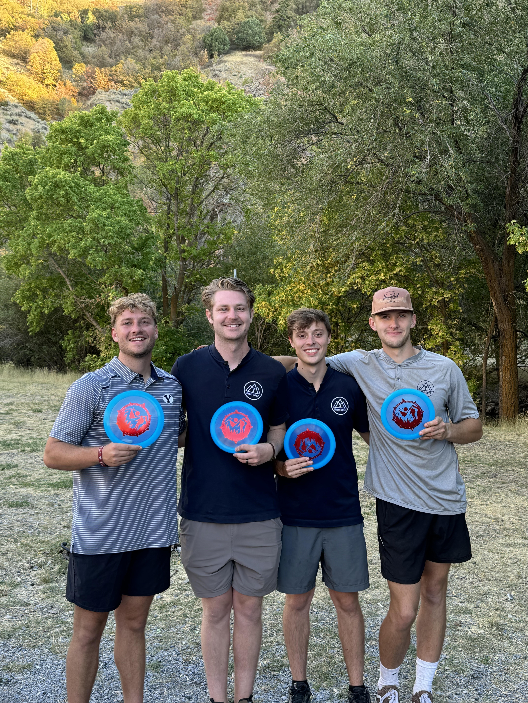

Welcome to the BYU Disc Golf Team Page
Disc golf is a fun and challenging sport enjoyed by people of all ages. While usually an individual sport, collegiate disc golf creates a competetive team format for univerisites from all over the country to compete on a national level. Learn about the BYU disc golf team below!
Facts About the BYU Disc Golf Team
- The BYU Disc Golf Team is currently ranked 4th in the nation.
- After three tournaments against schools from Colorado, Utah, and California, BYU is undefeated this season.
- In April 2025, BYU will send a team to compete at the Collegiate Disc Golf National Championships.
- Teams are divided into four teams. Ryan Bain, Abe Field, Ryder Voelker, and Tanner Shell make up the top team.
- The BYU team is an unofficial team made up of all BYU students, but are not recognized or funded by the university.

Tournament Round
Check out the video below to see BYU cruise to victory in a tournament held in Hobble Creek Canyon on 11/02/2024!
Disc Golf is an international sport, and we love to celebrate. Enjoy this interactive map of all the holidays around the world!: